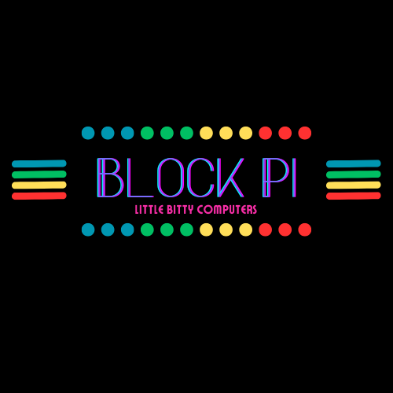

now | blog | wiki | recipes | bookmarks | contact | about | donate
* * * back home * * *
a line of open ARM computers for everyone
> The BlockPi gets its name because the casing style we use looks like Lego bricks put together!
The BlockPi is a line of small computers built by myself and my wife, RyokoUmbra.
They are built on top of Raspberry Pi single-board computers, and feature custom casings, operating system preinstalled, and a range of software either curated or written by us.
We envision BlockPi being used in all manner of places:
One of the machines I use regularly is a BlockPi hooked up to a small display. I use it headless sometimes as well, over SSH. I like the idea of using small computers that don't use a ton of energy when I can, especially when I'm not doing something that requires a lot of compute. Using these kinds of machines over the long-term can be a good way to practice permacomputing.
We give users a selection of operating systems to select from when building a BlockPi. We give a choice of Debian, Ubuntu, Raspberry Pi OS. In the future, when we have some scripts ready to support our configs, we also aim to offer Arch ARM.
If a user doesn't select an OS choice, we default to Ubuntu.
We pre-include a good bit of software through some scripts and utilities we have written. We provide some of the following tools that we have either written ourselves, or forked and modified:
nightshade - nightshade is a family of scripts which sets up installations and custom configurations of the software we include, configures custom desktop environments and our wiredWM tiling window manager, and more.blockpi_command_center - BlockPi Command Center is a TUI program that helps users get common tasks done on their BlockPi installation. It shows a central menu where the user can perform tasks such as package installation/removal, update management, check the local weather, talk to an LLM assistant, handle network configuration, search the web, and more. Since it's TUI-based, it's easy to use the Command Center from other machines over SSH to manage your BlockPi (We're also slowly working on a port of this software to the curses library in Python, which we will transition over to when it's done).wiredWM - wiredWM is a pre-configured fork of i3/sway, which draws heavy influences from Serial Experiments Lain and uses several suckless tools. It is an extremely lightweight environment, and therefore runs great on any device, including the BlockPi, where it is our preferred desktop.We also include other software, such as the Firefox and Chromium web browsers, Luanti for doing some gaming, Thunderbird for managing emails, Rhythmbox for music playback, VLC for video playback, LibreOffice for your office suite, and more.
Honestly, everyone can use BlockPi, and I'm not saying that only because we make them - if I think they're not a good solution for something, I will certainly let you know (in fact, I am letting you know with a subsectio below). The latest Raspberry Pi SBCs have been getting more and more impressive for use as desktop machines, and I have successfully used one in the office for awhile (at the time, a Pi 4 8GB).
BlockPi can be used fine for common desktop tasks. Things like browsing the web, watching videos, listening to music, playing some games, word processing, using communication apps - all of this will work just fine. BlockPi has 8GB of RAM, and the storage size is dictated by the size of the SD card in use. We offer 256GB and up to 1TB SD cards with our BlockPis (SD card inclusions are required with BlockPis since we pre-install the OS, though we will provide an option for people who want to 'bring their own' and avoid the setup. We'll provide scripts for them instead, to use if they want, so they can have the same set of software as other users).
BlockPi is also great for anyone who wants to explore GNU/Linux operating systems without first removing Windows or macOS from their main machines. They can use a desktop or headless BlockPi and explore different kinds of free software, desktop options, OS options, and learn how package management and general usage differs than on what they're currently used to. Or, it can be great for kids or people who want to get into programming for the first time!
If you want a simple, open computer that respects your privacy, doesn't use much power when plugged in, runs free software first, if you want to run a home server, if you want to build some kind of hardware project, make a small living-room gaming or TV video-watching setup, or if you just want to see what the ARM architecture is all about, there are all kinds of different things you can do with a BlockPi, as long as you keep your expectations in check.
Pi hardware, and SBCs in general, have really seen a lot of improvement since the release of the original Pi back in the day. You can now comfortably use them for a ton of common computing tasks, and it is a lot of fun. A BlockPi without a bunch of things running in the background (ideally, a headless installation), can even run local AI inference using smaller LLMs (we ship software that supports this functionality).
~ who shouldn't use BlockPi?
As we mentioned above, it's important to keep your expectations in check. This hardware has really improved and with the right software that utilizes the hardware it's on, it can make for a solid desktop or headless computing experience. However, as promised, I want to go over when it's not going to be the best choice to reach for a BlockPi.
Don't expect a BlockPi to run super-powerful tasks. You aren't going to be playing the latest AAA game, compiling Chromium, or rendering crazy projects in Blender. While the hardware has gotten very good and can provide a comfortable, lightweight computing environment, keep its limitations in mind, and remember that it's still an SBC, not that crazy machine you spec'd out on PC Parts Picker and built for $3000 with huge amounts of RAM.
We have several plans for future things for BlockPi. Some of these things are still just ideas and no real work has been done on them yet, so I won't go too deep into them, but here are a few of the plans we're thinking about with the hardware:
There are no guarantees that any of these ideas will ever happen (besides the homestead automation thing, we are planning on working on that one), but it is a peek on some of the ideas that we might experiment with. If we think of anything else interesting we might work on in the future, we will update it here.
Soon, I'm going to upload videos on my YouTube channel of BlockPi tours and general usage so you can get an idea of how it works.
BlockPis are put together by us getting the latest Raspberry Pi SBCs (we favor the 8GB boards so that everyone can get the most amount of power possible), we source good-looking casings for them (in the future, we will be 3D-printing our own casings), we pre-install an OS and a suite of custom software for the users, a custom tiling desktop, provide an SD card with the image and software on it with a good amount of storage (256GB up to 1TB). We list them on our website, and then people click the buy it button, and we trade computer for money.
All of the BlockPis we build are stored in our temperature-controlled office building. We test each unit after an SD card with an OS image has been installed. We test each device to ensure it boots, all hardware ports work as expected, and the usual.
When someone buys a BlockPi, they have the option to choose an OS for it. They select from Debian, Ubuntu, Raspberry Pi OS, and Arch ARM, and we include the appropriate pre-flashed SD card with it (we keep all of our OS images up-to-date). They can choose the default setup, or they can choose no pre-configuration, in which case they provide their own SD card and OS and receive only the BlockPi hardware.
> If you go the "DIY" route with your BlockPi purchase, you're not locked out of the nightshade suite! As mentioned elsewhere on this page, we provide all our our scripts, configs, and software that is found on our pre-installed SD cards in our GitHub, so you can use it whether you have a pre-configured BlockPi or not, if you wish.
We also want to create eco-friendly packaging for the BlockPis for when we ship them out to users.
If you want to trade money for computer, please visit the BlockPi website.
> We're currently working on putting more BlockPis together, but when they're ready, we'll post a link to the BlockPi website here where anyone can purchase one if they'd like one!
> If you would like to contribute some code to the BlockPi software suite, where we're aiming to build great, minimal FOSS apps for ARM on GNU/Linux, please see our code repos to learn how to get involved.